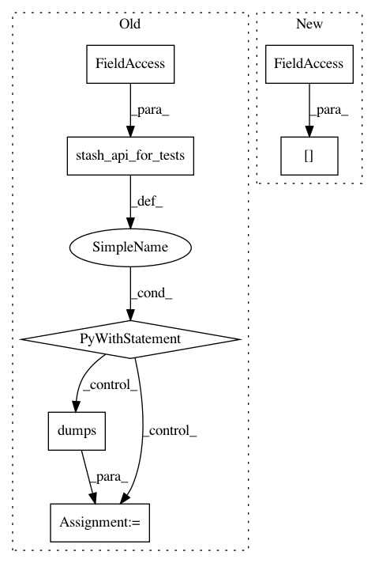

5cfa1934e4a2157d07ef534e1033a3f0e5bc1082,python/ray/experimental/client/server/server.py,RayletServicer,_schedule_function,#RayletServicer#Any#Any#Any#,203
Before Change
remote_func = self.function_refs[payload_ref.binary()]
arglist = _convert_args(task.args, prepared_args)
// Prepare call if we"re in a test
with stash_api_for_tests(self._test_mode):
output = remote_func.remote(*arglist)
if output.binary() in self.object_refs:
raise Exception("already found it")
self.object_refs[output.binary()] = output
pickled_output = cloudpickle.dumps(output)
return ray_client_pb2.ClientTaskTicket(
return_ref=make_remote_ref(output.binary(), pickled_output))
After Change
output = remote_func.remote(*arglist)
if output.binary() in self.object_refs[task.client_id]:
raise Exception("already found it")
self.object_refs[task.client_id][output.binary()] = output
return ray_client_pb2.ClientTaskTicket(return_id=output.binary())
def _convert_args(self, arg_list, prepared_args=None):
In pattern: SUPERPATTERN
Frequency: 3
Non-data size: 7
Instances
Project Name: ray-project/ray
Commit Name: 5cfa1934e4a2157d07ef534e1033a3f0e5bc1082
Time: 2020-12-18
Author: me@barakmich.com
File Name: python/ray/experimental/client/server/server.py
Class Name: RayletServicer
Method Name: _schedule_function
Project Name: ray-project/ray
Commit Name: 5cfa1934e4a2157d07ef534e1033a3f0e5bc1082
Time: 2020-12-18
Author: me@barakmich.com
File Name: python/ray/experimental/client/server/server.py
Class Name: RayletServicer
Method Name: _schedule_actor
Project Name: ray-project/ray
Commit Name: 5cfa1934e4a2157d07ef534e1033a3f0e5bc1082
Time: 2020-12-18
Author: me@barakmich.com
File Name: python/ray/experimental/client/server/server.py
Class Name: RayletServicer
Method Name: _schedule_method